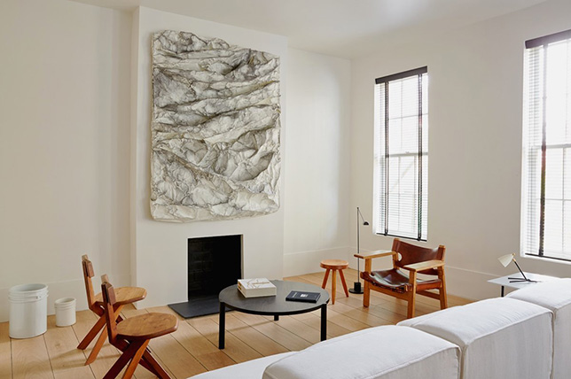
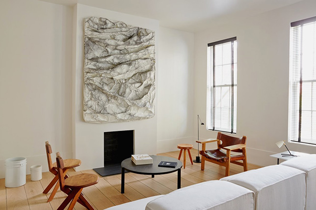
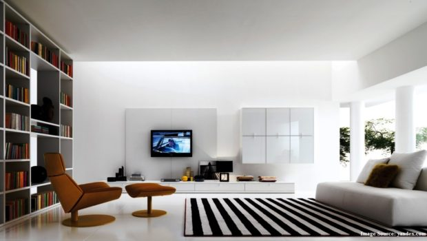
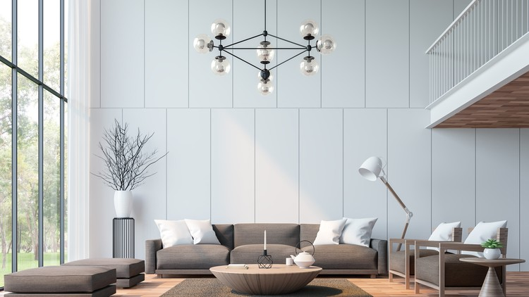
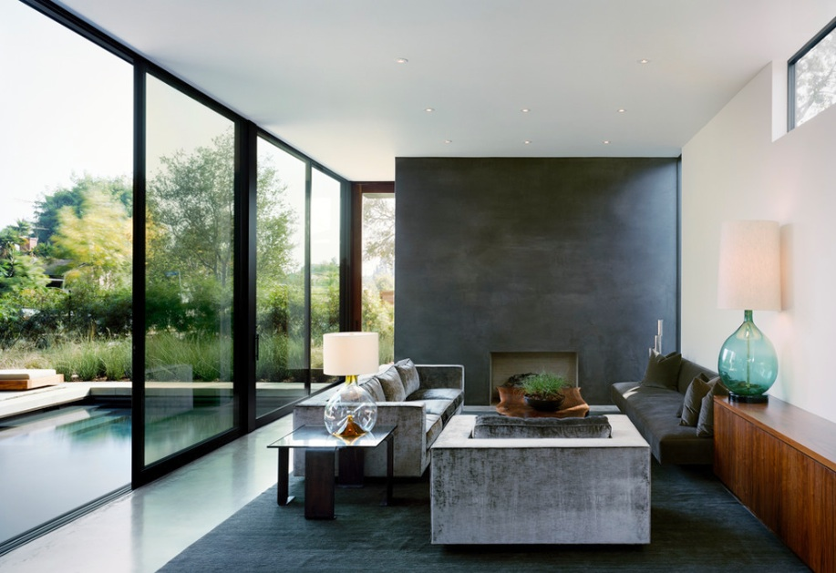
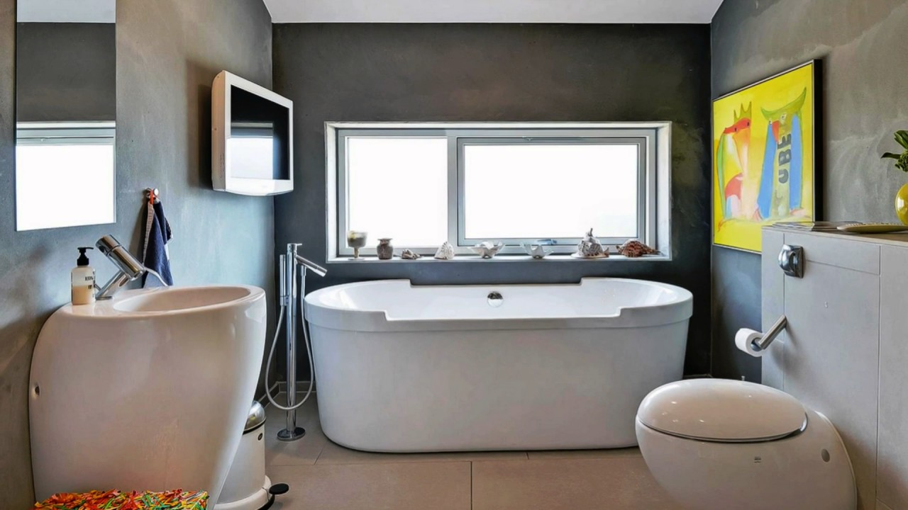

Some of my Work
'Wood' living room

'Stone' bedroom

'Warm' living room
'Green' living room

'Wood' living room
'Stone' bedroom
'Warm' living room
'Green' living room
Stripes elements in bedroom
'Light' living room
'Grey' living room
Minimal bathroom
